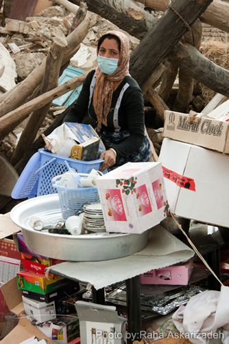
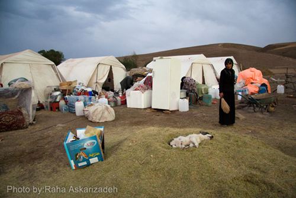

|
|
|
Browsing
Contact Us |
Campaigners |
Face to Face |
Tribune |
Interview |
News |
On the Web |
One Million |
Report
Farsi | Français | German | Italian | Spanish | العربية Also in this section
|

Women Who Pull Life Out From Under the RubbleBy: Raha Asgarizadeh Saturday 15 September 2012 Translated by: Salman Zia Ebrahimi The town of Varzaghan, located in the province of Eastern Azerbaijan in Iran, boasts the second highest copper deposits in Iran only after Kerman which has the highest copper deposits in the country. Mining this expensive metal has had no positive effect on the lives and welfare of the people here. The residents of the town of Varzaghan and its surrounding villages were grappling with poverty even before this earthquake. This is evidenced by the fact that Varzaghan did not even have a hospital until last year. Approximately 300 villages near Ahar, Haris, and Varzaghan have been devastated during the recent earthquake. According to the reports from news agencies, the governor of the town of Varzaghan was out of town when the earthquake hit, and he only returned to his duties after a delay of several hours.
The Crisis Management Center of the province of Eastern Azerbaijan has been very secretive about the critical conditions in Varzaghan. The first rescue teams were sent to the area at 12 midnight, seven hours after the earthquake hit. In the interim, the residents and ordinary people took it upon themselves to provide assistance and rescue the wounded. According to the director of the coroner’s office of the province of Eastern Azerbaijan, 66 percent of the victims of the earthquake were women. One week after the Azerbaijan earthquake that measured 6.3 on the Richter scale, we traveled to the villages near Varzaghan. On the main road, banners pointed the way to the villages that had been hit with the earthquake. We head towards the earthquake-stricken village of Baheh Baj. As we enter the village, we first see mounds of dirt and piles of wooden poles which before the earthquake had been the materials that formed the roofs of these primitive houses. The intense stench of rot and decay is unbearable. We see four or five people searching through the rubble. After this destruction and disaster, they have come to search for something to reconnect them to their lives. A woman who has covered her mouth and nose with a mask, pulls out a mirror and candelabra set from the rubble that was once her house. She puts the mirror and candelabra next to her dusty melamine plates. She says in the Azari (Turkish) dialect: “They have said that it is going to rain. We have come to pull out some of our belongings that might have survived the earthquake.” The ground is covered with the rubble from the destroyed houses and stables. With every step that you take, you are trampling on a piece of life, a life that despite all its shortcomings was at least standing and had not turned into a mound of rubble yet. The woman indicates that we should not stand so close to a wall that was partially destroyed and says: “This house has collapsed some more again today.” As she is digging through the dirt with bare hands to pull out a kitchen utensil, she languishingly talks about her rug weaving loom hat has been buried under the rubble. If nature had allowed and if the walls of the house had been sturdier, she would have earned 50,000 tomans from the sale of the carpet that she had been weaving. The men of the village dig up her dusty rug and the loom. The floral designs on the carpet are all obscured by dust and all seem to have the color of dirt, but the woman can see the true colors through the dirt. Her eyes sparkle with happiness and she joyously calls us to come and look at her hand-woven rug on the dusty broken loom. The broken loom is a memento of a life that was standing and had not collapsed yet.
 A little distance from this spot, we see a young woman whose face has turned pale. She kindly waves hello to us while struggling hard to carry a box away from the rubble. Her name is Samira and she is 25. She talks about a newly-wed woman who was the bride of their village for a few days. The walls of her house collapsed and her small bridal chamber became her grave. Of all the dead in the village, her memory brought the most tears to the eyes of the villagers because she was from another village and as a new resident of the village, was a lonely stranger here.
The wind blows and the stench of the carcasses of the dead animals that are scattered here and there rises from the disaster-stricken ground. Samira pulls her head scarf to her nose and says: “Don’t stay here too long. The sanitary conditions are not good.” She points at the carcasses of the animals and says that they have been lying there for a week. The wind does not let up and kicks up the stench and dust from the ruins. Samira’s face has lost all its color. She sits in a corner and it seems that she is about to throw up. She is nine months pregnant. The pills that the doctor had given her, which she doesn’t know what they were, have been buried under the rubble. I ask her if she knows of the condition of the fetus after the earthquake hit. She says that no doctors have come to the village yet. This village had been visited by high level government officials the previous day. The white tents of the Red Crescent Organization can be seen here and there. Because of the topographical characteristics of this area, they have had to look for flat areas to put up the tents. In some areas, because of the scarcity of flat areas to put up tents, they haven’t been able to put up enough tents so that each family would have its own tent. In some cases they have had to position the tents too close to the rubble.
A 17-year-old girl and her mother are standing next to their tent. Her mother has come to take her to Tabriz, but the girl wants to stay here. Her husband is an aid worker in the village and helps the victims of the earthquake there. Therefore, despite all the shortcomings and difficult conditions, she prefers not to leave. She says: “From 5 P.M. when the quake hit, until about noon the next day we were sitting right here on the ground waiting for the relief teams to bring us tents. The quake claimed 36 lives as well as a large number of wounded in their village. The campsite for the residents of the village of Chai Kendy is located on the grounds of the village cemetery close to the road. The villagers keep their livestock and poultry next to their tents in makeshift enclosures which they have put together using the lumber and boards retrieved from the rubble. One of them says: “Wild animals come down from the mountains at night to get our livestock.” Many of the villages, after a week has passed by, don’t have portable toilets or washing facilities yet. The women of the Chai Kendy village use the toilet of the village school which survived the earthquake, but they don’t have any washing facilities. The only washing facility in the area is a field unit which was installed a couple of days ago and can only be used by men. Things are just a little better in the village of Zangbar. Most of their tents have electricity and a couple of days ago a phone line was brought in so the people can take turns to use the phone. Outside the tents, we can see a big group of women who have gathered to get mineral water which has been donated and brought to the area with the aid of ordinary citizens. I ask a young woman if they have enough sanitary supplies such as sanitary napkins. She says: “They brought a lot of sanitary napkins.” She laughs bashfully and continues calmly: “We were embarrassed in front of men when they brought the sanitary napkins.” She adds: “We use them, but my mother and some other women are not used to sanitary napkins. They use rags.” It is embarrassing for her and other young women to use the toilet that has been set up. They head for the ruins, and by standing guard for each other, they conceal their discernible and common embarrassment. Once they are sure that we understand the situation, another woman calmly whispers something in the ears of the woman who had been explaining the toilet situation to us. The woman who was talking to us about the toilet, tells us that the other woman uses an I.U.D. as a birth control device. She has back pain after moving her household goods that survived the earthquake and she is worried about it. I ask her if she has consulted with the people in the medical tent. She says: “I don’t feel comfortable to do that tonight; maybe I’ll talk to them tomorrow.” The women of this village kindly invite us to their tents to eat watermelon with them. A young woman lays down her infant on the ground and says that she has not been able to properly breast feed her baby since the day of the earthquake. The infant refuses to drink baby formula. The woman herself has also lost her appetite. She says: “Today I am having a good time eating watermelon with you.” She is worried about the cold months ahead and the rainy nights in the fall. She says: “Once it gets cold, we can no longer stay in these tents with just a blanket to keep us warm. The weather in Azerbaijan will get cold soon. These are the last days that the sun will keep the ground warm in this area. If the rubble is not hauled away and the roads are not repaired, mud and slush will be another problem that these people will have to deal with. This village is well-known for its dairy and especially for its homemade butter that is produced by the women of the village. When we leave the village, according to a local custom, they throw water behind us to wish us a safe journey. Mah Azar, one of the women of the village, whispers in our ears: “We are sorry that we don’t have any butter to take with you. All of our butter was buried under the rubble; otherwise we would give you some to take with you.” We are speechless and our tongues fail to utter any words of gratitude because we are embarrassed by their incredible generosity and hospitality that even after digging the graves of so many loved ones, they still want to give and share. The children play on the mounds of rubble in the village. The mounds of rubble have not reached their full potential yet. Each partially collapsed wall is like a hungry animal waiting in ambush and may collapse at any minute and claim a young life. The seismography center of Iran has registered over one thousand aftershocks in the Varzaghan area over the course of last week. We leave the area and maybe we will never come back here to find out if Samira’s baby was born alive or was a stillborn. We may never find out how many years the site of these houses and stables will remain empty. We may never come back to this area to find out if the women were able to overcome their embarrassment. These are the women who still have bowls to throw water behind travelers to wish them a safe journey, women who pull life out of the rubble, and perhaps they will not let dirt-colored floral designs take shape on the rugs they may be weaving on their looms.
 |